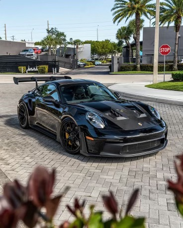
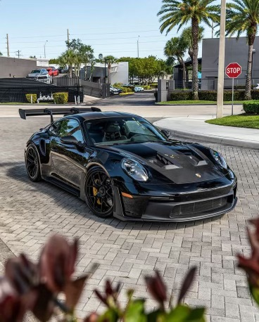

Hello,
My name is Savara Khan, and I was born and raised in Brooklyn, New York. Coming from a Pakistani background, I have always been surrounded by a rich cultural heritage and can speak three languages fluently: Urdu, Punjabi, and English. While growing up my father always taught me to take care of the people around me, as well as animals who can not fend for themselves. This has deeply influenced me and led me and my sister to take turns feeding stray cats near the train tracks by our house. My dream in life is to retire my parents and buy them there dream home. Click Here for chewy where you can order animal food and toysWhen it comes to favorite foods, I am pretty simple pizza and fries are my go to comfort meals. I’ve always had a love for basketball, and I was even on my high school basketball team, which allowed me to cultivate a sense of discipline and teamwork. Another personal passion of mine is coffee, and I dream of one day owning my own coffee franchise as a side hobby. I love to travel and plan to take a break each year to explore different countries, immersing myself in new cultures and experiences. I also love fast cars and my dream is to buy a Porsche 911 GT3 RS and an Audi R8. The combination of caring for animals, playing sports, and envisioning my own business ventures keeps me motivated to accomplish my dreams.
 
Click Here for ubereats to order your favorite food
Click Here to look at my dream car the Porsche 911 GT3 RS

Click Here for ubereats to order your favorite food
Click Here to look at my dream car the Porsche 911 GT3 RSClick Here to look at my dream car the Audi R8
I chose to pursue a major in Data Science because I believe it offers endless potential for growth, both financially and intellectually. In the next 5 to 10 years, I see myself reaching milestones in both my professional and personal life. My career goal is to work for one of the top tech companies in the world—whether it be Google, Microsoft, Amazon, or even starting my own tech company. Beyond data science, I am equally committed to launching my coffee franchise, with hopes of opening my first shop in Manhattan or Brooklyn. Balancing these goals, I plan to establish multiple streams of income through entrepreneurial ventures like my dream coffee shop and possibly a bakery, where I can combine creativity with business.
Click Here to order great coffeeAs I continue to refine my skills in Data Science, I see myself gravitating toward roles in web designing and data collecting. I find the process of gathering information and designing digital solutions to be both intellectually stimulating and rewarding. My dream is to land a position at renowned companies like google or Apple, where I can apply my skills on a global scale. However, my long term goal isn’t limited to working for someone else I hope to eventually build my own startup, combining my expertise in data science with a fresh, innovative approach to solving real world problems. For my dream job, I envision a career that combines my interests, skills, and passions in a way that allows me to make a meaningful impact on the world while pursuing what I love.
Click Here to look at apple.com Click Here to look at google.com
Thank you for taking the time to learn a little about me I hope you enjoyed!